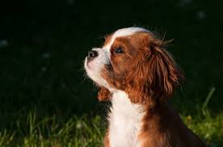

The Japanease Spits puppy is a very small, white, and fluffy puppy.
The cockerspaniel is a coffee brown dog with soft and curly ears.

The golden retreiver is a fluffy and furry dog with light golden hair.

This dog is a light borwn, dark brown, and white dog with bright blue eyes and lots of fur.

The husky has light gray and white fur, dark brown eyes, and pointy ears.